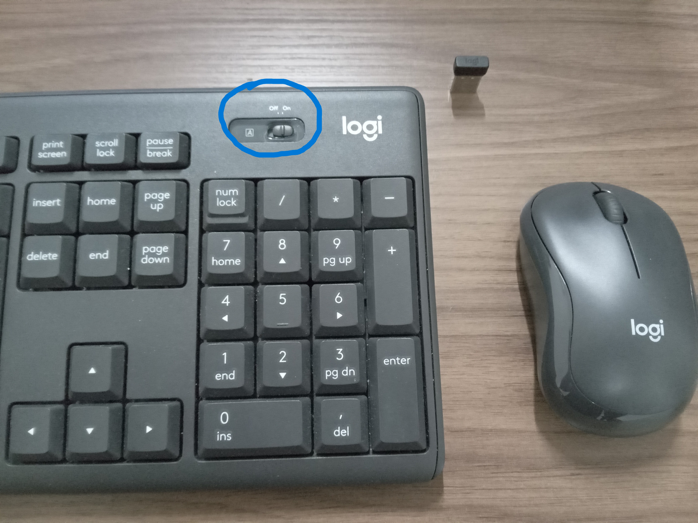
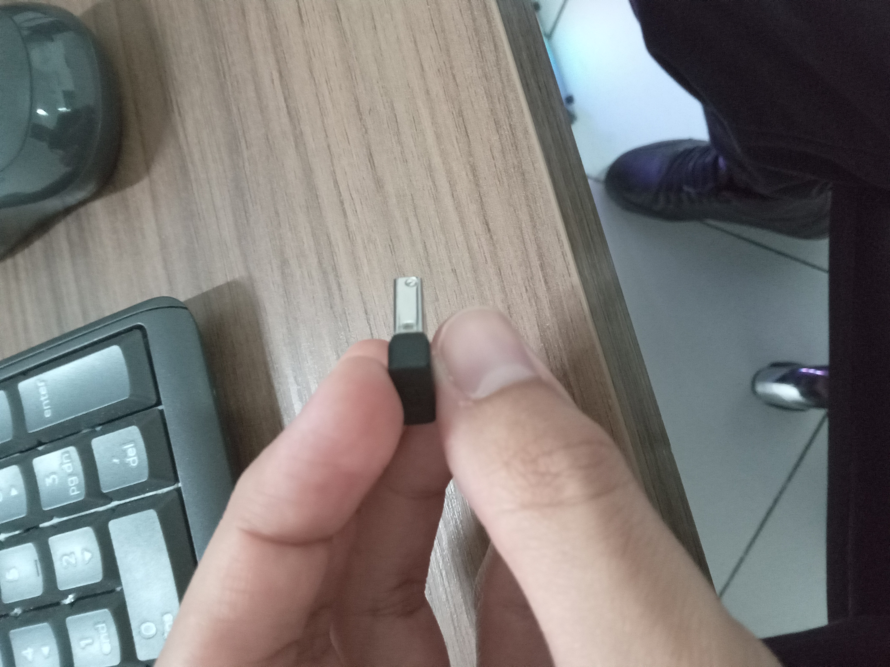
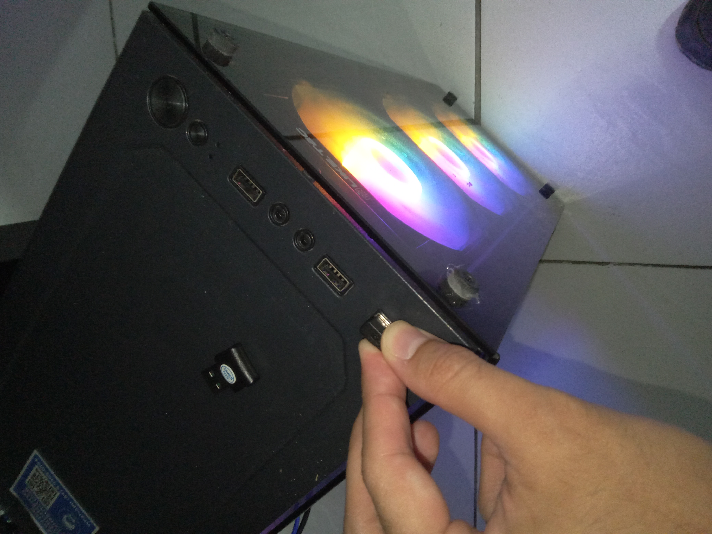

Problemas no Teclado ou Mouse, vamo tentar resolver isso:
Primeiro de tudo, verifique se o teclado está de fato ligado, se for via cabo.

se for via bluetooth, verifique se ele está ligado.

se for via bluetooth, verifique se ele está ligado.

se ele não estiver ligado, verifique o adaptador

As vezes a porta USB pode está com problemas, sendo assim é interessante colocar o adaptador.